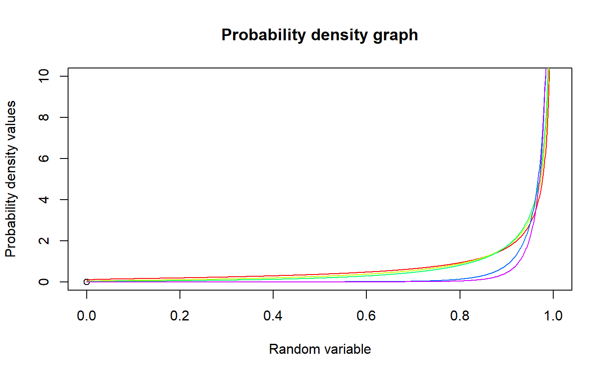
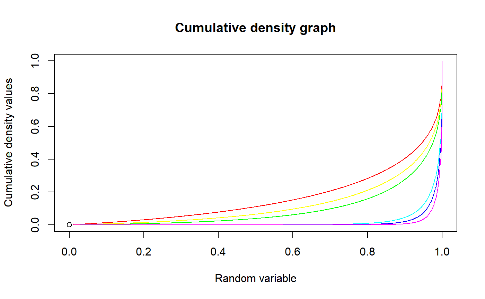

These functions provide the ability for generating probability density values, cumulative probability density values and moment about zero values for the Gaussian Hypergeometric Generalized Beta distribution bounded between [0,1].
dGHGBeta(p,n,a,b,c)
| p | vector of probabilities. |
|---|---|
| n | single value for no of binomial trials. |
| a | single value for shape parameter alpha representing as a. |
| b | single value for shape parameter beta representing as b. |
| c | single value for shape parameter lambda representing as c. |
The output of dGHGBeta gives a list format consisting
pdf probability density values in vector form.
mean mean of the Gaussian Hypergeometric Generalized Beta Distribution.
var variance of the Gaussian Hypergeometric Generalized Beta Distribution.
The probability density function and cumulative density function of a unit bounded Gaussian Hypergeometric Generalized Beta Distribution with random variable P are given by
$$g_{P}(p)= \frac{1}{B(a,b)}\frac{2F1(-n,a;-b-n+1;1)}{2F1(-n,a;-b-n+1;c)} p^{a-1}(1-p)^{b-1} \frac{c^{b+n}}{(c+(1-c)p)^{a+b+n}} $$; \(0 \le p \le 1\) $$G_{P}(p)= \int^p_0 \frac{1}{B(a,b)}\frac{2F1(-n,a;-b-n+1;1)}{2F1(-n,a;-b-n+1;c)} t^{a-1}(1-t)^{b-1}\frac{c^{b+n}}{(c+(1-c)t)^{a+b+n}} \,dt $$ ; \(0 \le p \le 1\) $$a,b,c > 0$$ $$n = 1,2,3,...$$
The mean and the variance are denoted by $$E[P]= \int^1_0 \frac{p}{B(a,b)}\frac{2F1(-n,a;-b-n+1;1)}{2F1(-n,a;-b-n+1;c)} p^{a-1}(1-p)^{b-1}\frac{c^{b+n}}{(c+(1-c)p)^{a+b+n}} \,dp $$ $$var[P]= \int^1_0 \frac{p^2}{B(a,b)}\frac{2F1(-n,a;-b-n+1;1)}{2F1(-n,a;-b-n+1;c)} p^{a-1}(1-p)^{b-1}\frac{c^{b+n}}{(c+(1-c)p)^{a+b+n}} \,dp - (E[p])^2$$
The moments about zero is denoted as $$E[P^r]= \int^1_0 \frac{p^r}{B(a,b)}\frac{2F1(-n,a;-b-n+1;1)}{2F1(-n,a;-b-n+1;c)} p^{a-1}(1-p)^{b-1}\frac{c^{b+n}}{(c+(1-c)p)^{a+b+n}} \,dp$$ \(r = 1,2,3,...\)
Defined as \(B(a,b)\) as the beta function. Defined as \(2F1(a,b;c;d)\) as the Gaussian Hypergeometric function.
NOTE : If input parameters are not in given domain conditions necessary error messages will be provided to go further.
Rodriguez-Avi, J., Conde-Sanchez, A., Saez-Castillo, A. J., & Olmo-Jimenez, M. J. (2007). A generalization of the beta-binomial distribution. Journal of the Royal Statistical Society. Series C (Applied Statistics), 56(1), 51-61.
Available at : http://dx.doi.org/10.1111/j.1467-9876.2007.00564.x
Pearson, J., 2009. Computation of Hypergeometric Functions. Transformation, (September), p.1--123.
#plotting the random variables and probability values col<-rainbow(5) a<-c(.1,.2,.3,1.5,2.15) plot(0,0,main="Probability density graph",xlab="Random variable",ylab="Probability density values", xlim = c(0,1),ylim = c(0,10))for (i in 1:5) { lines(seq(0,1,by=0.001),dGHGBeta(seq(0,1,by=0.001),7,1+a[i],0.3,1+a[i])$pdf,col = col[i]) }#> [1] 0.0000000 0.3509262 0.5228737 0.6498913 0.7501031 0.8314439 0.8984165 #> [8] 0.9539442 1.0000887 1.0383876 1.0700333 1.0959788 1.1170022 1.1337505 #> [15] 1.1467690 1.1565225 1.1634108 1.1677804 1.1699335 1.1701354 1.1686196 #> [22] 1.1655927 1.1612380 1.1557188 1.1491806 1.1417536 1.1335546 1.1246883 #> [29] 1.1152486 1.1053204 1.0949799 1.0842960 1.0733307 1.0621401 1.0507751 #> [36] 1.0392813 1.0277005 1.0160703 1.0044248 0.9927948 0.9812086 0.9696918 #> [43] 0.9582674 0.9469569 0.9357794 0.9247528 0.9138932 0.9032156 0.8927339 #> [50] 0.8824609 0.8724086 0.8625882 0.8530105 0.8436855 0.8346233 0.8258333 #> [57] 0.8173251 0.8091080 0.8011917 0.7935860 0.7863010 0.7793473 0.7727362 #> [64] 0.7664797 0.7605909 0.7550840 0.7499744 0.7452794 0.7410182 0.7372121 #> [71] 0.7338851 0.7310645 0.7287810 0.7270699 0.7259715 0.7255322 0.7258059 #> [78] 0.7268551 0.7287532 0.7315867 0.7354580 0.7404897 0.7468297 0.7546578 #> [85] 0.7641951 0.7757165 0.7895686 0.8061949 0.8261722 0.8502673 0.8795219 #> [92] 0.9153933 0.9599887 1.0164861 1.0899378 1.1889502 1.3296336 1.5465948 #> [99] 1.9327387 2.8776352 Inf#> [1] 0.5279419#> [1] 0.09648382#plotting the random variables and cumulative probability values col<-rainbow(6) a<-c(.1,.2,.3,1.5,2.1,3) plot(0,0,main="Cumulative density graph",xlab="Random variable",ylab="Cumulative density values", xlim = c(0,1),ylim = c(0,1))for (i in 1:6) { lines(seq(0.01,1,by=0.001),pGHGBeta(seq(0.01,1,by=0.001),7,1+a[i],0.3,1+a[i]),col=col[i]) }#> [1] 0.000000000 0.002183554 0.006603937 0.012495083 0.019513343 0.027434627 #> [7] 0.036094544 0.045364862 0.055142153 0.065340545 0.075887778 0.086722256 #> [13] 0.097790990 0.109048005 0.120453512 0.131972520 0.143574429 0.155232357 #> [19] 0.166922664 0.178624540 0.190319663 0.201991911 0.213627107 0.225212805 #> [25] 0.236738102 0.248193470 0.259570533 0.270862265 0.282062393 0.293165615 #> [31] 0.304167434 0.315064076 0.325852422 0.336529945 0.347094650 0.357545024 #> [37] 0.367879993 0.378098877 0.388201355 0.398187430 0.408057404 0.417811841 #> [43] 0.427451554 0.436977576 0.446391143 0.455693674 0.464886762 0.473972152 #> [49] 0.482951735 0.491827534 0.500601696 0.509276404 0.517854193 0.526337459 #> [55] 0.534728782 0.543030835 0.551246389 0.559378309 0.567429555 0.575403182 #> [61] 0.583302347 0.591130309 0.598890438 0.606586219 0.614221261 0.621799313 #> [67] 0.629324268 0.636800185 0.644231304 0.651622068 0.658977145 0.666301461 #> [73] 0.673600228 0.680878991 0.688143671 0.695400620 0.702656694 0.709919325 #> [79] 0.717196627 0.724497509 0.731831821 0.739210537 0.746645976 0.754152090 #> [85] 0.761744827 0.769442602 0.777266920 0.785243211 0.793401970 0.801780355 #> [91] 0.810424473 0.819392782 0.828761308 0.838632034 0.849147177 0.860515236 #> [97] 0.873063293 0.887356913 0.904538189 0.927708021 1.000002698#> [1] 0.5279419#acquiring the variance for a=1.6312,b=0.3913,c=0.6659 mazGHGBeta(2,7,1.6312,0.3913,0.6659)-mazGHGBeta(1,7,1.6312,0.3913,0.6659)^2#> [1] 0.09648382#only the integer value of moments is taken here because moments cannot be decimal mazGHGBeta(1.9,15,5,6,1)#> [1] 0.4545455